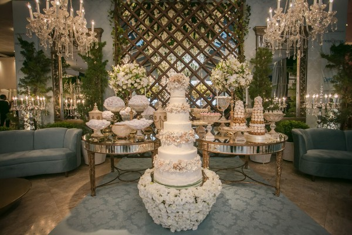
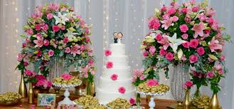
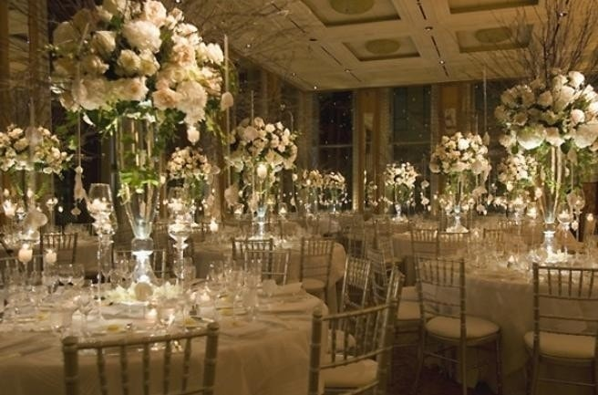

Festa de casamento:
Um pouco da tradição:
Casamento ou matrimônio é um vínculo estabelecido entre duas pessoas, mediante o reconhecimento governamental, cultural, religioso (vide casamento religioso) ou social e que pressupõe uma relação interpessoal de intimidade, cuja representação arquetípica é a coabitação, embora possa ser visto por muitos como um contrato. Normalmente, é marcado por um ato solene.
Nossas categorias para festa de casamento:
• Festa de casamento – Uma comemoração dentro do estabelecimento, o pacote inclui o buffet, música ao vivo e música com DJ, mesas e decoração a gosto do cliente, um enorme palco para a comemoração final entre os noivos, uma área infantil para as crianças, wi-fi livre e eletrônicos para divertimento de jovens e adultos.
• Casamento religioso – Inclui o pacote “Festa de casamento” Celebrado perante uma autoridade religiosa dentro do estabelecimento
• Casamento ao ar livre – Inclui o pacote “Festa de casamento” (porém é celebrado ao lado de fora do estabelecimento), com uma preparação e decoração especial para agradar o ambiente.
